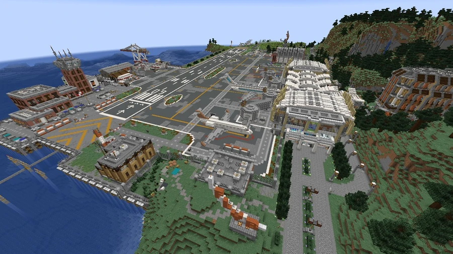
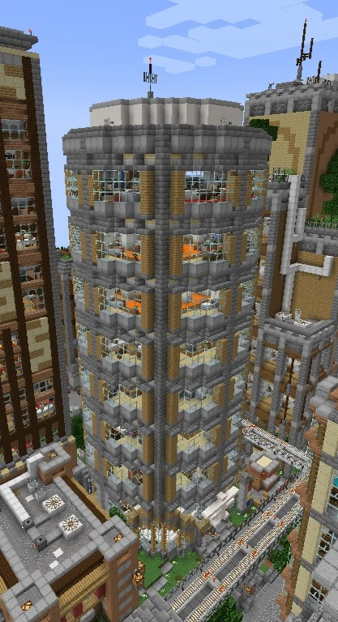

Broville International Airport
462, 72, 1892
The region’s main airport complex, on the peninsula northeast of the urban area. It is an arrival point from Fractal Island and a Purple Line metro terminus.
The peninsula and the metro
Broville International Airport lies east of the city, north of Braulding and west of Fort Bulwark. It is the region's main airport infrastructure and an arrival point for visitors. Airport is a terminus of the metro Purple Line, with Boardwalk the next stop toward the center; network signs regularly indicate the airport's direction.



Arriving from Fractal
The tourist guide Warp Recommendations directs visitors to cross the bridge east of the starting point on Fractal Island and board the plane that provides access to the airport. It presents this arrival as a “fresh off the boat” experience for a first visit and recommends the metro for onward travel through the city.



Aircraft and facilities
The runways and hangars also house helicopters, described by their appearance as having paramilitary or industrial designs. The airport is close to Broville's military base; the aircraft's appearance alone does not identify their operator.
Airlines and Downtown headquarters
Boarding-area records list five airlines alongside the motto UNITED WE DIVE:
- RP JL Airways.
- Metalus Air.
- Bro Express.
- FSHairways.
- Golaire. The International Airline Company Headquarters stands in southern Downtown, at −233, 101, 1899. Inside, a message reads: “THAT'S NOT A CHEMTRAIL, ITS JUST AN OIL LEAK”. The sign jokes about suspicions surrounding aircraft trails and the reliability of the engines.
See also
Sources and references
- v11.4.4 maps, signs, books and items World records
- International Airport · Broville Wiki Community archive
- Broville City Districts · v11.4.4 package map Cartography
- Broville Metro Map · Department of Transportation Cartography
- Warp Recommendations · BroTours Publishings, copy at 1199, 69, 798 World book
- Build-team coordinate list — airport (warp 693) Map
Text adapted and expanded from International Airport (contributors and history, revision 4919). Adapted text is available under CC BY-SA 3.0.